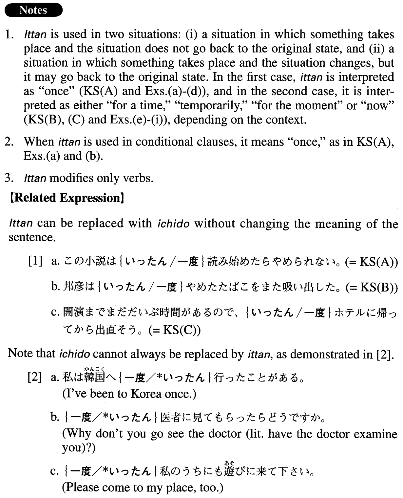

←
DoJG
→
一旦・いったん
(A. 161)
Example sentences
(ksa).
このは小説
一旦
読み始めたらやめられない。
Once you begin reading this novel, you won't be able to put it down (literally: stop reading it).
(ksb).
邦彦は
一旦
やめたタバコをまた吸い出した。
Kunihiko resumed smoking, which he had quit for a time.
(ksc).
開演までまだだいぶ時間があるので、
一旦
ホテルに帰ってから出直そう。
There's still a lot of time before the performance begins, so let's go back to the hotel (now) and come again later.
(a).
この大学は、
一旦
入学してしまえば、そんなに勉強しなくても必ず卒業できる。
Once you've entered this university, you will definitely be able to graduate, even if you don't study very hard.
(b).
この電子掲示板は
一旦
書き込むと消せないので、自分のメッセージを書く時に注意しないといけない。
Once you write a message on this electronic bulletin board, you cannot delete it, so you have to be careful (when you write a message).
(c).
石田は、
一旦
約束した以上は必ず守る男だ。
Ishida is someone who keeps his promise (once he has made one), no matter what.
(d).
一旦
こじれた我々の関係は、容易には元に戻らなかった。
Our relationship, once it had become complicated, did not recover easily.
(e).
予算が厳しくなったので、無料健康相談サービスを
一旦
中止します。
Because the budget has become tight, we are going to discontinue our free health consultation service temporarily.
(f).
新型ウイルスの被害は
一旦
終息したように見えた。
It appeared that damage from the new virus had subsided temporarily.
(g).
ひょっとすると違う原因かもしれないので、今飲んでいる薬を
一旦
やめてしばらく様子を見てみましょう。
There might be a different cause, so stop taking the current drug for the moment and see what happens.
(h).
今使っているプログラムを
一旦
終了して、再起動してみて下さい。
Please quite the current program (literally: the program you are using now) temporarily and reboot.
(i).
一旦
日本へ帰って、親と相談してからアメリカで就職するかどうかを決めたい。
I'd like to go back to Japan for a time and, (when I'm there) after talking to my parents, decide whether or not I'll look for a job in the U.S.
Formation
一旦
Verb
一旦
やめる
Stop something temporarily
